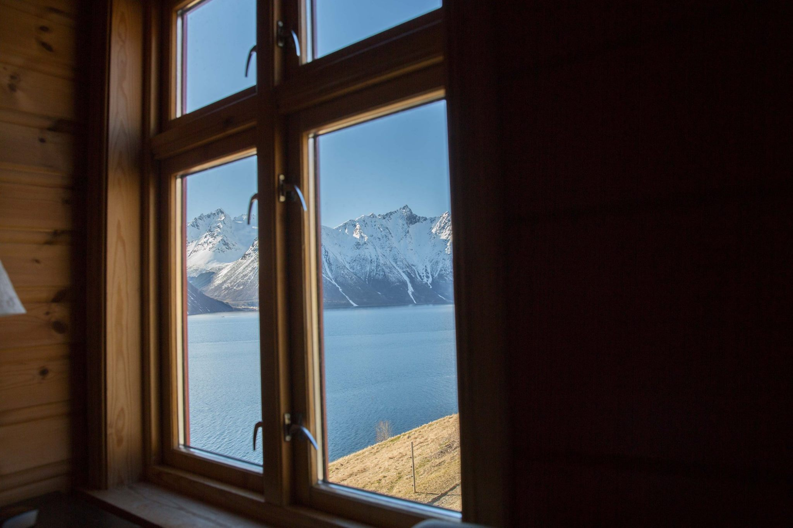
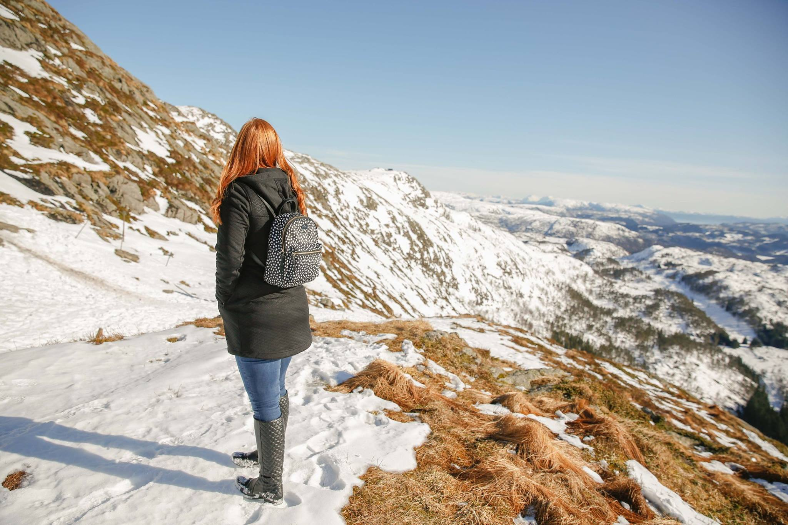
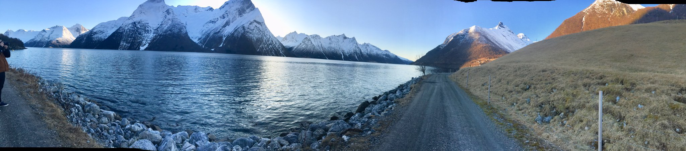

A traveler is born
The spot
My husband found this hidden gem after we took a chance on cheap airfare to Norway on a whim with no prior knowledge of what the country has to offer in regards to traveling or photography. But when you find a flight to a new country for €540 round trip for two, you take it and ask questions later. As with any trip, we thoroughly check our options and tried not limit oursevles to major cities or attractions. After a few days of searching and my husband stumbled on a heart-stopping photo.
The Swing.
The breathtaking scenery of a person seemingly swinging over the water, all while looking across to a beautiful mountain landscape, is what travel bloggers and Instagram model's dreams are made of. Yet, it appears to be an untapped travel spot. There was a real shortage of articles and tagged Instagram photos which led us to think “Why aren't more people going there?”. After hours of research, the answer became clear, there is a severe lack of information.
Finding out where was easy, but how was hard.
It only took a simple search to find that the swing sits at the charming restaurant of Christian Gaard, a family legacy handed down through generations that rests on the hillside village of Trandal in the Hjørundfjord area, hours north of Bergen and a just couple hours south of Alesund. There are only two ways in, by ferry across a fjord or by hiking across the mountain.
This is where things start to get hazy. At the time no sites, including Christian Gaard's own, offer reservation or even mention lodging, amenities, or even mere hours of operation. Could you actually stay there? Is the swing accessible throughout all seasons? The Gaard website wasn't supplying answers and travel forums were severally lacking in any first-hand experience. We kept digging. And after many attempts to reach out to Gaard by phone and facebook we finally got a message back saying we were welcome to stay.
The trip
Coming from the United States flew into Bergen from New York and then begun the eight-hour drive to Trandal. We were hoping to view a taste of the Nordic countryside while stopping for a sleep along the way. Most of the trip was fairly simple to plan, but we were still uncertain what to expect when arriving in Trandal.
Our drive from Bergen to Trandal was pretty much what you'd expect. We were surrounded by towering mountains and beautiful fjords from the time we left the comfort of the main municipality. Eight hours and two ferries later, we arrvied. We were warmly greeted on arrival and took a walk around the grounds to find the swing. It was as simple as any backyard swing, but rural American could never produce such awe-inspiring views. After settling in, we took a few turns on the swing. There is a decent incline under the swing that leads straight into the fjord and was intimidating at first, but you become more comfortable the longer you swing.
The eventual photo was as, if not more, impressive than we could have ever imagined. While other's might not consider a single photo worth such a long trek, the experience, and view that accompanied the journey was incredible. If you're seeking a true Norwegian experience that leaves you feeling like you walked straight into a travel brochure, I'd suggest taking a trip to the elusive Trandal swing.